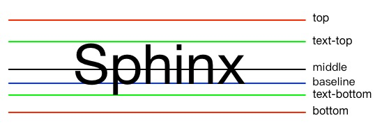
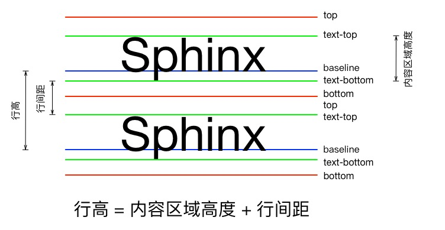

line-height & vertical-align
问题一：
// html代码片段
你以为是这样的：
其实是这样的：
问题二：
 为什么没垂直居中对齐
为什么没垂直居中对齐
line-height是什么？？
行高：上下文本行的基线之间的垂直距离（百度）。
baselineLine-height baselineLine-height
直观的看，行高就是上面两条红色虚线之间的距离。
baseline（基线）又是什么？
行高与行间距关系
注意：
1、内容区域高度只与字体大小和字体类型有关，与行高无关
2、只有在特定字体下，比如simsun，STHeiti，内容区域才和字体大小一样
3、为了保证行高，行间距可以是负值
高度计算机理
───如何计算盒子的高度？
这是一行简单的文字
这是一行简单的文字
那么问题来了:
p的高度是否由文字大小（font-size）撑开？
实践出真知：
这是第一段测试文字
这是一段测试文字
这是第二段测试文字
这是二段测试文字
结论：
p的高度是由行高撑开的!!
那么，如果一行文字里面有多种变化会怎么样？
行内格式上下文
(inline formatting contexts)
<p>这是一行<em>简单</em>的文字，但其实一共有四种盒子</p>
- 内容区域（content area）：一种围绕文字看不见的盒子。其大小与文字字体和字体大小有关。
- 内联盒子（inline boxes）：文字外部包含inline水平标签的盒子为内联盒子，没有包含任何标签的为匿名内联盒子
- 行框盒子（line boxex）：内联盒子排成一行组成一个行框盒子（行框盒子是由内联盒子组成的）如果上述文字能在一行排下，就是一个行框盒子，如果排成两行，就是两个行框盒子，以此类推。
- 包含盒子（containing box）：包含盒子中包含了一行一行的行框盒子。上面的p标签就是一个包含盒子。
内容区域高度计算
1、内容区域高度只与字体大小和字体类型有关，与行高无关
2、内容区域高度与字体大小不一定相等
内联盒子的高度怎么计算呢？
| 可替换 | 不可替换 | |
| inline | 链接 | 与普通的文字高度计算类似 |
| inline-block | 同上 | 与边框盒子（margin-box）类似 |
1、可替换元素
1、不可替换元素。不可替换元素和之前的普通文字一致
其计算方式就是我们熟悉的边框盒子（margin-box）模型的计算方式
行框盒子（line boxes）高度怎么计算？？
官方原文
-
The height of a line box is determined as follows:
- The height of each inline-level box in the line box is calculated. For replaced elements, inline-block elements, and inline-table elements, this is the height of their margin box; for inline boxes, this is their 'line-height'. (See "Calculating heights and margins" and the height of inline boxes in "Leading and half-leading".)
- The inline-level boxes are aligned vertically according to their 'vertical-align' property. In case they are aligned 'top' or 'bottom', they must be aligned so as to minimize the line box height. If such boxes are tall enough, there are multiple solutions and CSS 2.1 does not define the position of the line box's baseline (i.e., the position of the strut, see below).
- The line box height is the distance between the uppermost box top and the lowermost box bottom. (This includes the strut, as explained under 'line-height' below.)
自我理解版
1、首先，计算行框盒子(line box)内的每个内联盒子(inline boxes，包括了内联元素（inline elements）和内联块(inline-block)）的高度。
2、其次，内联盒子会根据各自的“vertical-align”属性被垂直对齐起来。由于CSS2.1并没有规定行框盒子（line box）基线（baseline）的位置，因此，如果只是简单的按照将内联水平盒子垂直对齐起来，将会有很多种不同的表现形式，所以这里的对齐需要满足一个条件，那就是所有内联水平盒子对齐后，包含他们的行框盒子的高度必须是所有情况中最小的高度。
3、最后，行框盒子的高度就是所有盒子中最高上边框与最低下边框之间的距离。
包含盒子（containing box）的高度
所有行框盒子（line boxes）的高度加起来
vertical-align
vertical-align 属性
线类：baseline, top, middle, bottom
文本类：text-top, text-bottom
上下标类：sub, super
数值类：20px, 2em
百分比类：20%
vertical-align 只能作用于inline-level以及table-cell元素
内联元素的baseline，middle，top，bottom，text-top，text-bottom
红色线：top， bottom；绿色线：text-top，text-bottom；蓝色线：baseline；黑色线：middle
1、左边设置了“line-height:1”，因此绿色线和红色线重合（图中只能看到绿色线）
2、中间设置了“line-height:2”，因此红色线包裹了绿色线
3、右边设置了“line-height:0.5”，因此红色线缩进到了绿色线里面
内联块状元素的基线
| inline-block with in-flow content | inline-block with in-flow content and overflow:hidden | inline-block with no in-flow content |
1、内联块状元素的上下边界就是边框盒子（margin-box）的top和bottom边线（上图中的红色线）。
2、内联块状元素的基线位置取决于该元素是否具有文本流（in-flow content）。
- 如果内联块状元素内部具有普通的文本流，则其基线是正常文本流中最后一个行框盒子的基线，如上图左所示
- 如果内联块状元素设置了overflow属性，则其基线是该内联块状元素的底边缘，如上图中所示
- 如果内联块状元素内部没有文本流，则其基线也是内联块状元素的底边缘，如上图右所示
原文献上>>戳我看W3C原文<<
知道了内联元素和内联块状元素的各色各样的线，是不是还没过瘾？是不是想看看行框盒子的基线？
千万别眨眼，我要放大招了
行框盒子（line boxes）
CSS 2.1 does not define the position of the line box's baseline
CSS规范里并没有规定行框盒子的基线具体处于什么位置。行框盒子的基线是变化的。
行框盒子的基线会出现在任何它应该出现的位置——行框盒子高度最低的时候的基线位置
幽灵内联元素
可以简单理解为：块状元素内部的内联元素的行为表现，就好像块状元素内部还有一个看不见摸不着，没有宽度，高度等于其父容器行高的幽灵内联元素。
首先，利用字母“x”模拟幽灵内联元素，其基线就是行框盒子基线
回到一开始的那只会哭的猴子,并增加一个inline-block水平的元素用来表示幽灵内联元素
1、首先，内联盒子默认的对齐方式是基线对齐，即：“vertical-align：baseline”。
2、其次，图片的基线——也就是图片的下边缘——要和幽灵内联元素的基线对齐。
3、最后，幽灵盒子本身是具有高度的，而其高度就是其父容器所设定的行高。这也就是为什么图片的下边缘会有空白了。
那么，如何消除图片下边缘的空白呢？
1、inline水平元素block化
2、设置line-height
line-height: 60px3、vertical-align:middle|bottom|top
<img src="../../images/想哭的猴子.jpg" alt="一只想哭的猴子" style="vertical-align: bottom">
</div>
垂直居中
垂直居中
内联盒子如果不设置vertical-align属性，则默认为baseline
垂直居中
垂直居中
只设置图片vertical-align属性为middle，图片与文字框高度之间并没有完全垂直居中
垂直居中
垂直居中
设置图片vertical-align属性为middle，并设置文字vertical-align属性为middle，图片与文字框完全居中
垂
垂
| font-family: arial | font-family: Open Sans |